chore(website): migrate tailwind to v4, daisyui to v5 and flowbite to v0.12
On /api-documentation the pill buttons in the "LAPIS query engines" section have less vertical
padding in the PR. The "View backend API documentation" button is also slightly smaller. Looks like a DaisyUI v5
default-size change for .btn. Cosmetic; nothing is broken.
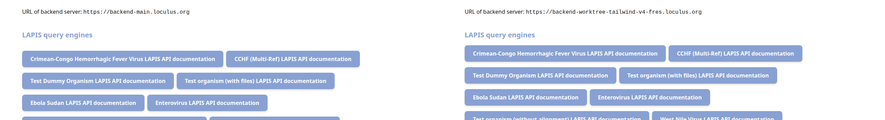
In the desktop header, the closed-state "Organisms ▾" button now shows a visible border / button outline. Probably a Tailwind v4 outline/focus-ring change.
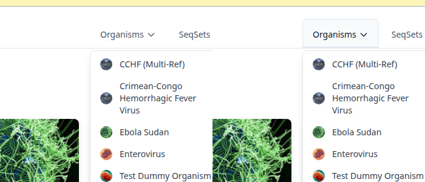
At 390 px width, the rows in the off-canvas mobile menu have more vertical spacing in the PR, making
the menu noticeably taller. Backdrop overlay still renders correctly (the bg-gray-800/50
Tailwind v4 syntax in OffCanvasOverlay.tsx works).
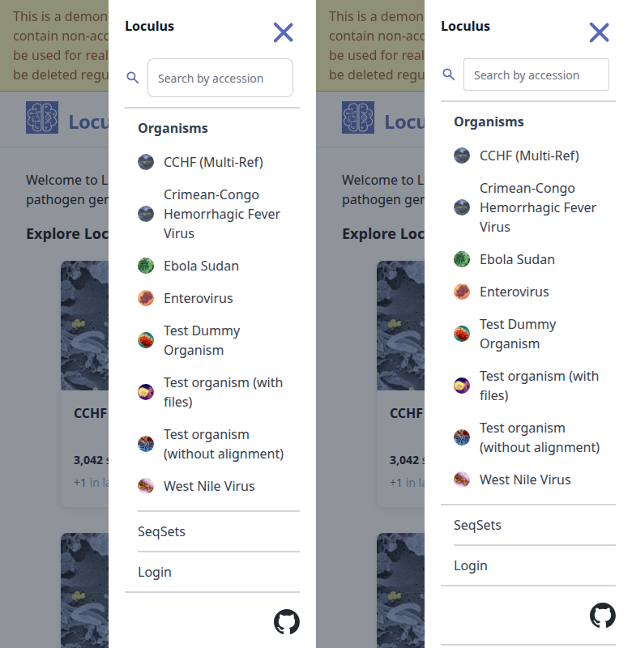
On the search page → "Download all entries" dialog, the radio-button visuals changed: MAIN shows a recessed inner dot; PR shows a flat filled blue circle with a small white centre. More notable, the disabled child radios (FASTA header style → Accession / Display name) render almost invisibly on PR vs visible-but-greyed on MAIN — worth checking they still convey "disabled but available once parent is selected".
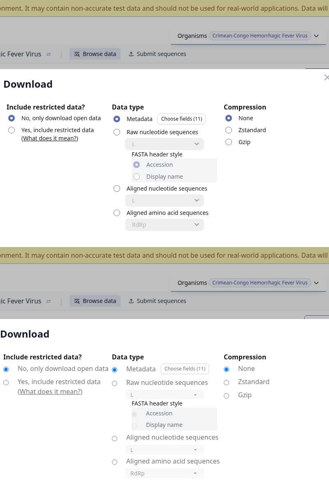
Visiting /user on the PR preview lands on the Keycloak host
(authentication-worktree-tailwind-v4-fres.loculus.org) which is serving an error page instead
of the login form. That's the preview's auth deployment, not anything in this PR's website code — but
flagging so it doesn't get mistaken for a regression caused by the migration.
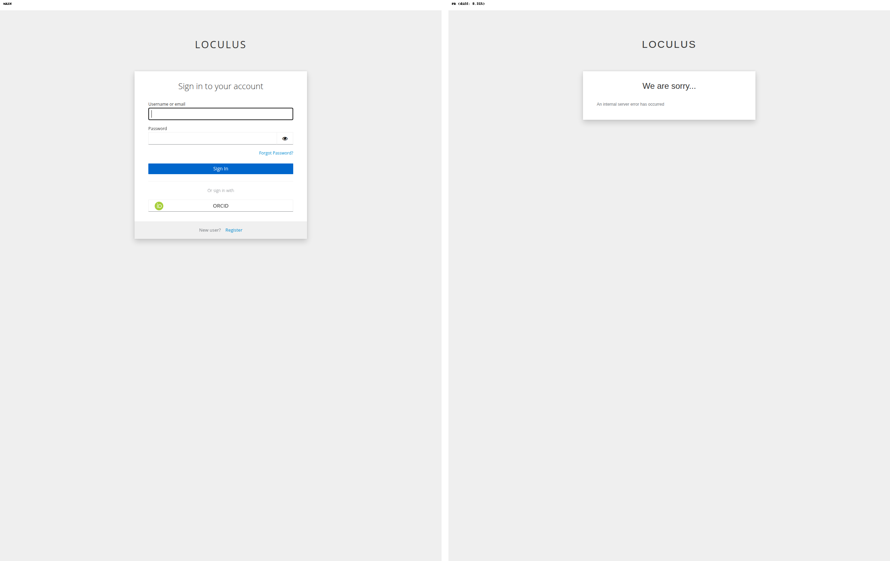
/cchf/cchf/search, /ebola-sudan/search, /cchf-multi-ref/search,
/dummy-organism-with-files/search, /cchf/search (mobile)/cchf/submission/seqsets/api-documentation (except finding #1 above)/seq/<id>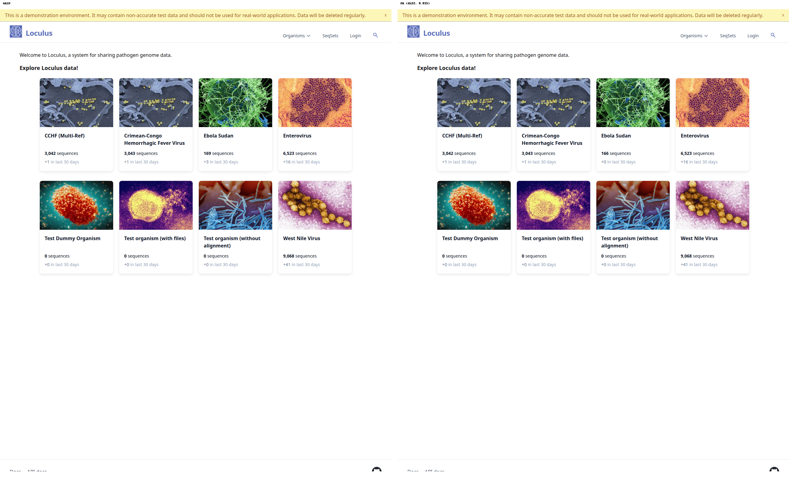
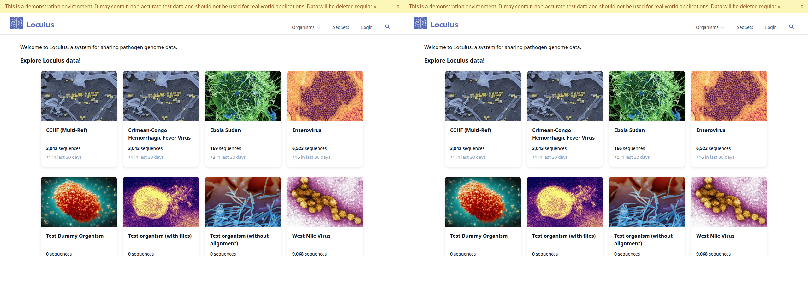
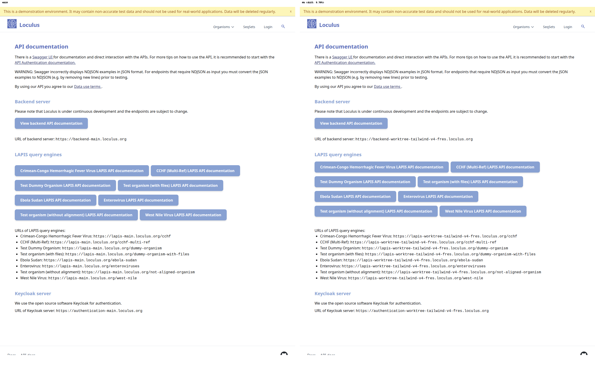
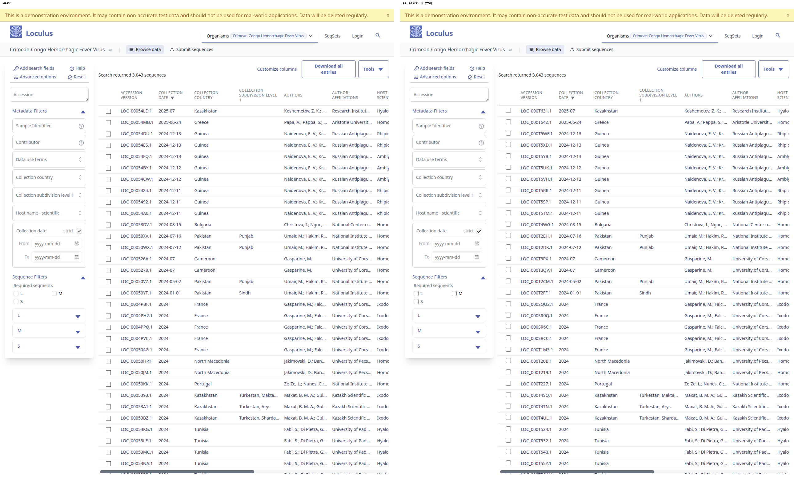
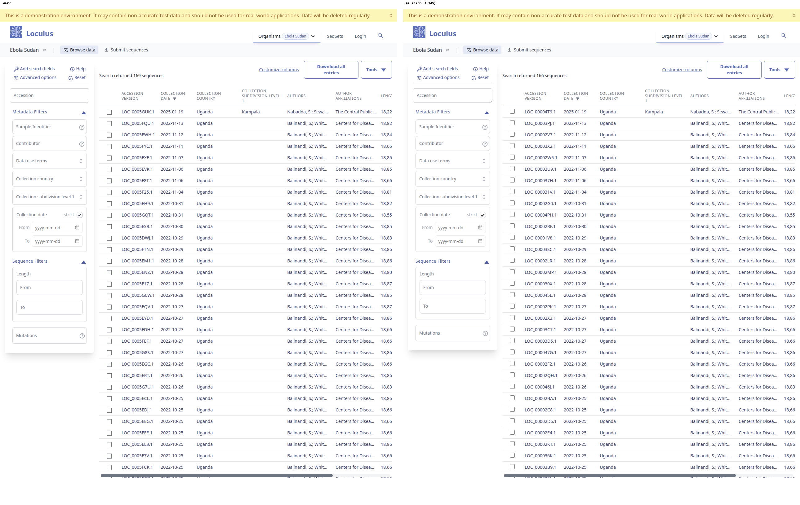
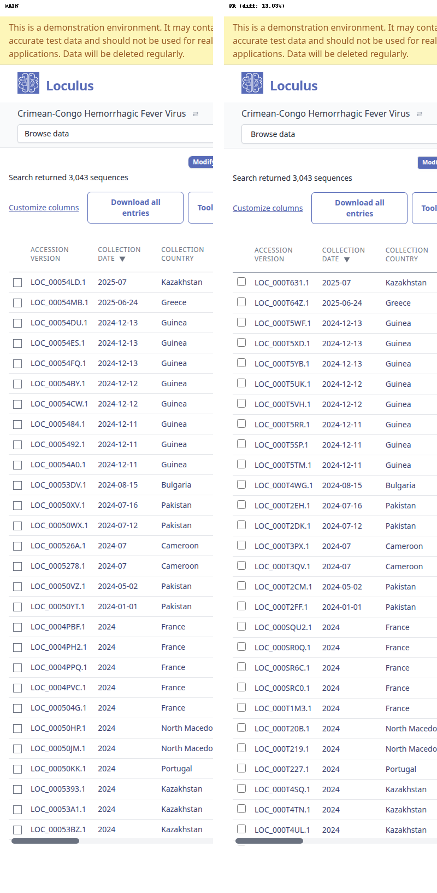
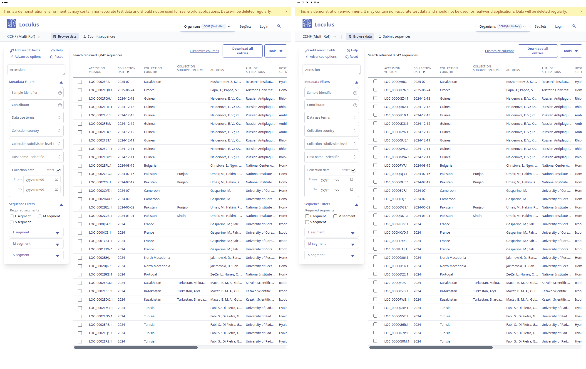
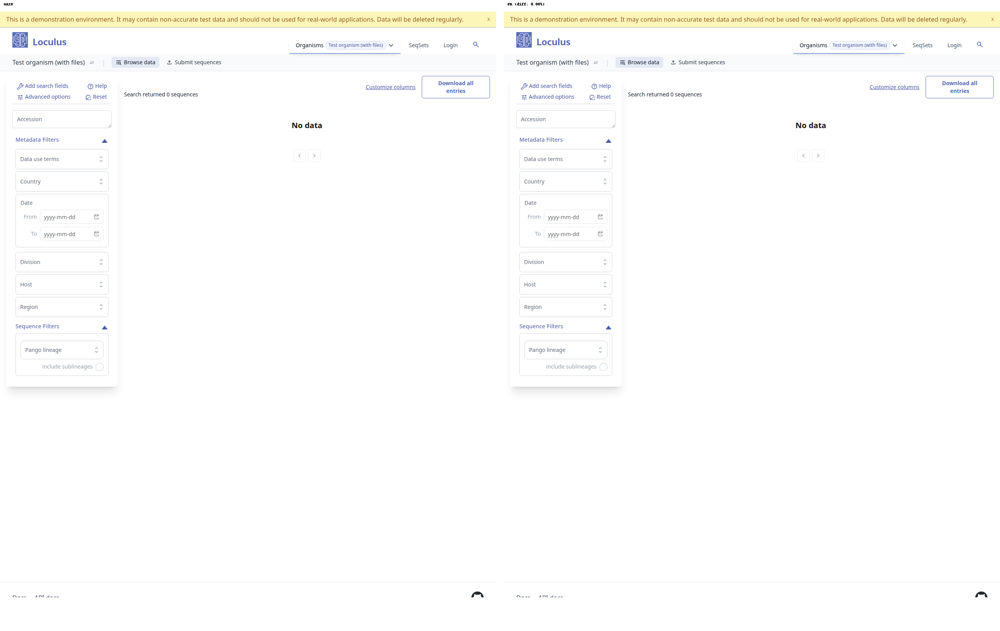
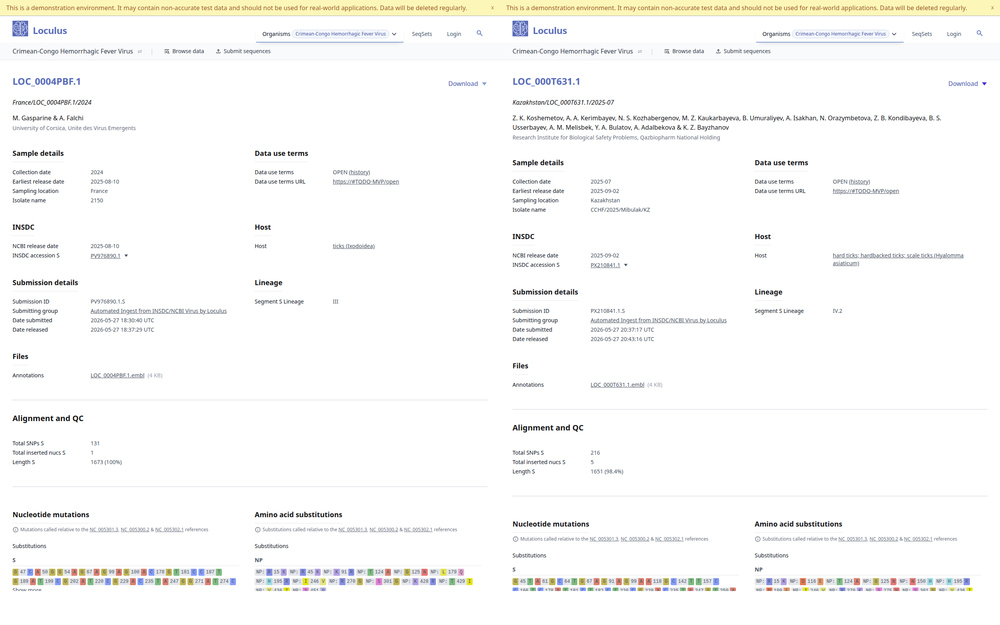
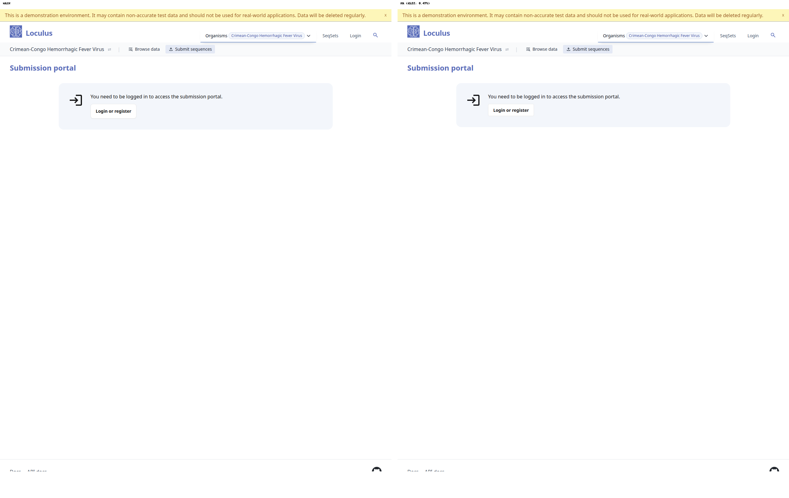
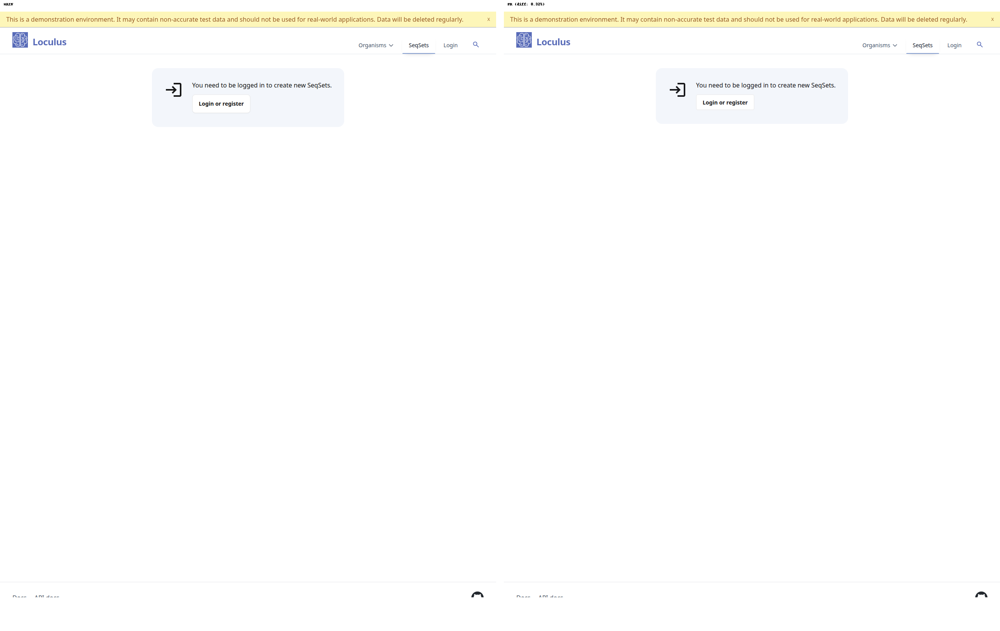
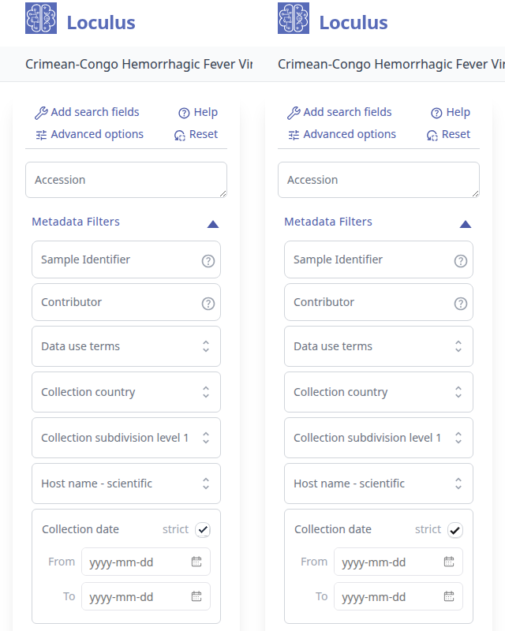
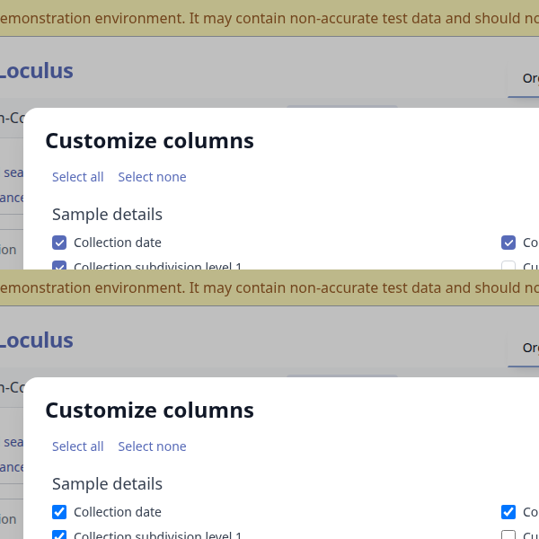
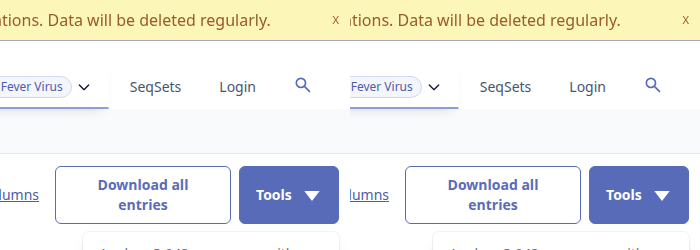
Crude pixel-diff (RGB sum > 10 per pixel) across full-page screenshots. The high percentages for search/browse pages are dominated by different sequence data in the two environments, not visual regressions — see the gallery for confirmation.
| Page | changed px % | cause |
|---|---|---|
| search_cchf_mobile | 13.03 % | different table rows |
| api_docs | 9.70 % | finding #1 (button sizing) + URL string in body |
| user_page | 8.31 % | finding #5 (Keycloak — not PR) |
| multi_ref_search | 6.65 % | different table rows |
| organism_cchf / search_cchf | 5.27 % | different table rows |
| search_ebola | 1.94 % | different table rows |
| submission_cchf | 0.47 % | tiny anti-alias drift |
| seqsets | 0.32 % | tiny anti-alias drift |
| home_mobile, home, files_organism | < 0.05 % | essentially identical |